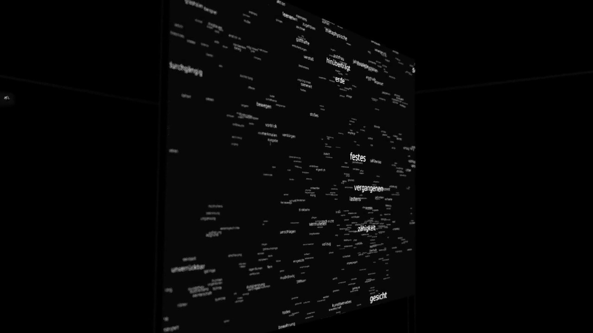
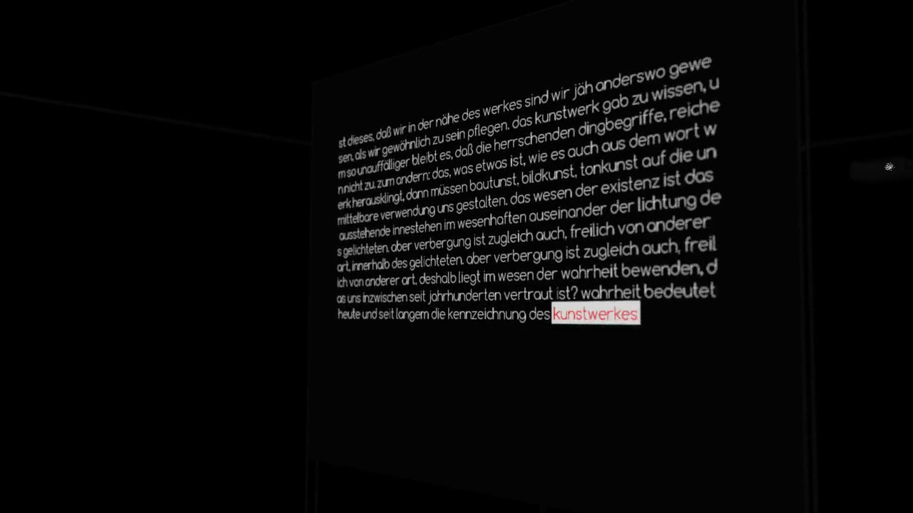

Since at least 1986* we know that a machine is able to establish network of concepts in surprisingly human way. Despite recent advances in AI, sentient machines will remain a science fiction prop for long time, but even today it is worth to wonder about their take on an idea of art. Is the art something that belongs exclusively to human or could be simulated in the real of machines?

Machine learning and real time CG, software
installation, dimension varies
Idea and realisation © Przemyslaw Sanecki 2014-15
Despite its age, Heidegger's writing about art remains an important account of phenomenon which escapes from a scientific lawfulness. We can safely assume that machines will keep to gather a knowledge about humanity by means of acquisition and processing of data. Therefore, we can already wonder whether the art will finally emerge as an intrinsic part of machine's subjectivity. The formal axis of the work is a language model of Martin Heidegger's "Der Ursprung des Kunstwerkes".
The screen no.1 shows a gravity drift in a semantic space - words are clustered according to their mutual similarities. The screen no.2 consists of a real-time output from a generative model. The accompanying sound comes from a synchronization of consecutively emerging words with sonification of their vector space embedding.

Machine learning and real time CG, software
installation, dimension varies
Idea and realisation © Przemyslaw Sanecki 2014-15